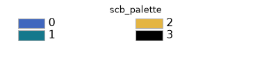
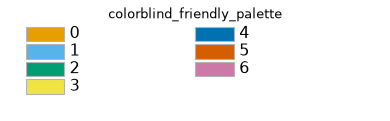
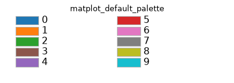

Plotting#
- class Plotting#
Bases:
objectCollection of standardised plotting utilities for Scarabaeus output data.
Provides methods to visualise OD solutions, trajectories, residuals, covariance ellipses, B-plane maps, and more. All methods apply a consistent style defined in
set_custom_styling().Methods
apply_scale_to_axes([scale])Apply logarithmic or linear scaling to a Matplotlib axes object.
compare_state_errors_norm(solution2, ...[, ...])Compares the state errors and sigma values of two solutions by plotting them together.
get_fig_handle(fig_handle[, show, save_dir, ...])Get the figure handle from another class
plot_asteroid_3d([obj_file, scale_factor, ...])Plot a 3D representation of an asteroid, either from an object file or a simple spherical mesh.
plot_compare_state_error_norm(...[, title, ...])Plots state errors norm for multiple iterations on the same figure for comparison.
plot_corner(samples[, labels, mean, ...])Corner plot of posterior samples, optionally against a Gaussian.
plot_covariance(P_bplane_parameters[, title])Given a B-plane covariance, plot a graphical representation.
plot_covariance_est(n_sigma[, title, scale, ...])Plots the covariance history.
plot_covariance_json(json_path[, iteration, ...])Plot the 1-sigma (the square root of the covariance diagonal) of every state component over time, from JSON.
plot_estimate_json(json_path[, iteration, ...])Plot the estimated state deviation per component over time, from JSON.
plot_fogm_parameters_estimate(epochs, n_sigma)Plot only stochastic Gauss-Markov parameters over time.
plot_gs_visibility(visibility_windows[, ...])Method to plot when the spacecraft can be seen by a set of ground stations
plot_measurement_availability(...[, scale, ...])Plots the availability of each measurement over time with x-axis labels as 'time - t_0' in integer days, where t_0 is the last time in combined_times.
plot_measurements_dataset(measurement_data)Method to plot the radiometric measurements as function of time.
plot_media_coverage([type])Plot DSN coverage intervals (in Ephemeris Time) from a media correction JSON file.
plot_multiple_covariance(sc_states, ...[, ...])Plot multiple covariances corresponding to different spacecraft positions and their covariances in the B-plane.
plot_multiple_orbits_3d(positions_list[, ...])Method for plotting multiple 3D trajectories, with default view as XY-plane.
plot_opnav_measurements(opnav_measurements)Method to plot opnav measurements as function of time.
plot_orbit_3d(positions[, title, origin, ...])Method for plotting a single 3D trajectory
plot_parameter_uncertainty_json(json_path[, ...])Plot the 1-sigma uncertainty time history of estimated parameters from JSON.
plot_parameters_errors(true_trajectory, ...)Plots the state errors and sigma bounds for each component of parameters.
plot_parameters_errors_norm(true_trajectory, ...)Plots the state errors and sigma bounds for each component of parameters.
plot_parameters_estimate(epochs, n_sigma[, ...])Plots the estimated parameters over time with error bars and shaded uncertainty bounds (\(\pm n\sigma\)).
plot_position_velocity(data[, times, title, ...])Method to plot the position-velocity as function of time.
plot_postfits_asynchronous(dataset_names, ...)Plots the postfit residuals for various measurements (e.g., range, range rate, OpNav u, OpNav v) dynamically based on dataset names.
plot_postfits_asynchronous_with_hist(...[, ...])Plots postfit residuals with histograms for various measurement types.
plot_postfits_histogram(epochs, dataset_names)Plots the postfit residuals in a histogram for various measurements (e.g., range, range rate, OpNav u, OpNav v) dynamically based on dataset names.
plot_postfits_scatter(epochs, dataset_names)Plots the postfit residuals in a scatter plot for various measurements (e.g., range, range rate, OpNav u, OpNav v) dynamically based on dataset names.
plot_prefit_residuals(n_sigma[, title, ...])Plots the prefit residuals for range and range rate measurements.
plot_radiometric_measurements(...[, title, ...])Method to plot the radiometric measurements as function of time.
plot_residuals_json(json_path[, iteration, ...])Plot prefit/postfit residuals directly from a solution JSON file.
plot_scenario_param([scale, x_offset_flag])Plots the scenario paramters
plot_state_errors(true_trajectory, epochs, ...)Plots the state errors and sigma bounds for each component of position and velocity.
plot_state_errors_norm(true_trajectory, ...)Plots the state errors and sigma values over time.
plot_uv_measurements_over_time([scale, ...])Plot u vs v measurements, colored by time, and add subplots of u and v pixels over time with a semilog y-axis for the time.
plot_with_x_offset([x_offset_flag])Subtract the first value from all elements to create a zero-based x-axis.
save_plot([save_dir, save_name, save_format])Save a Matplotlib figure to disk.
Apply the Scarabaeus default
rcParamsstyle to all subsequent plots.time_series_basic_line(time, data[, title, ...])Method for plotting time series data on a line plot.
time_series_basic_scatter(time, data[, ...])Method for plotting time series data on a scatter plot.
Notes
Scarabaeus’ plotting library contains multiple color palettes. See below for the colors contained within each:



- static get_fig_handle(fig_handle, show: bool = False, save_dir: str = None, save_name: str = None, save_format: str = None)#
Get the figure handle from another class
- Parameters:
fig_handle (matplotlib plt.figure() object) – Figure handle generated outside the Plotting class
show (bool) – Option to show plot. Defaults to False.
save_dir (str) – Save directory. Defaults to None.
save_name (str) – Figure saving name. Defaults to None.
save_format (str) – Figure saving format. Can be “pickle” or “png”. Defaults to None.
- static plot_asteroid_3d(obj_file=None, scale_factor=1.0, ax=None, radius=None, name='Asteroid')#
Plot a 3D representation of an asteroid, either from an object file or a simple spherical mesh.
Parameters: - obj_file (str, optional): Path to the asteroid 3D model file (e.g., .obj). If not provided, a simple spherical mesh is plotted. - scale_factor (float): Scaling factor to adjust the size of the asteroid. Default is 1.0. - ax (matplotlib.axes._subplots.Axes3DSubplot, optional): 3D axes to plot the asteroid on. If not provided, a new figure is created. - radius (float, optional): Radius of the asteroid in kilometers if a simple spherical mesh is used. Default is None. - name (str, optional): Name of the asteroid to display in the legend. Default is “Asteroid”.
Returns: - ax: The 3D axes containing the plot.
Raises: - ValueError: If both obj_file and radius are None.
- static plot_corner(samples, labels=None, mean=None, covariance=None, truths=None, indices=None, n_sigma=(1, 2, 3), title=None, **corner_kwargs)#
Corner plot of posterior samples, optionally against a Gaussian.
Every pair of dimensions gets a 2-D histogram with contours, and every dimension a marginal histogram, through
corner.corner(). The contours enclose the probability a 2-D Gaussian holds within \(n\) standard deviations, \(1 - e^{-n^2/2}\), so withcovariancethe overlaid \(n\)-sigma ellipses coincide with them when the samples are Gaussian.- Parameters:
- samplesMonteCarloSamples or array_like
Samples, e.g.
MCMC.samples, or an array of shape(n_samples, n_dimensions). The weights and labels of aMonteCarloSamplesare used.- labelssequence of str, optional
Name of each dimension of
samples. Defaults to the labels of aMonteCarloSamples, otherwise none.- meanarray_like, optional
Centre of the Gaussian overlay, shape
(n_dimensions,). Defaults to the weighted sample mean whencovarianceis given.- covariancearray_like, optional
Covariance of the Gaussian overlay (e.g. the filter’s), shape
(n_dimensions, n_dimensions). Itsn_sigmaellipses are drawn on the pairs and its density on the marginals. Defaults to no overlay.- truthsarray_like, optional
Reference value of each dimension, marked by lines. Defaults to none.
- indicessequence of int, optional
Dimensions to plot. Defaults to all.
- n_sigmasequence of float, optional
Contour and ellipse levels, in standard deviations. Defaults to
(1, 2, 3).- titlestr, optional
Figure title. Defaults to none.
- **corner_kwargs
Passed to
corner.corner()(e.g.bins,smooth,show_titles,quantiles,fig).
- Returns:
- matplotlib.figure.Figure
The corner plot.
- Raises:
- CornerSamplesError
If
samplesis not a 2-D array with at least two samples, orindicespicks dimensions it does not have.- CornerOverlayError
If
labels,truths,meanorcovariancedoes not match the dimensions ofsamples.
Examples
>>> solution = scb.MCMC(lsb).sample(seed=0) >>> fig = scb.Plotting.plot_corner( ... solution.filter.samples, ... covariance=lsb_solution.covariance_est[0], ... )
- static plot_covariance_json(json_path, iteration: str = 'final', use_smoothed: bool = True, time_unit: str = 'hr', log_scale: bool = True, save_dir: str = None, save_name: str = None, show: bool = False)#
Plot the 1-sigma (the square root of the covariance diagonal) of every state component over time, from JSON.
One line per state-covariance column, drawn against
timeline_epochs(the deviation/covariance grid), labelled from the leg metadata where available. Sequence leg boundaries are marked. Note the components carry mixed units (km, km/s, parameter units), so a log y-axis is used by default to show their relative evolution on one panel.- Parameters:
- json_pathstr or path-like
Path to a
SolutionODJSON file.- iterationstr, optional
Which iteration to plot for multi-iteration files. Defaults to
"final".- use_smoothedbool, optional
Prefer the smoother covariance when present and non-empty, else the filter covariance; each is read from
*_diagonalsor from the diagonals of*_full. Defaults to True.- time_unit{“s”, “min”, “hr”, “day”}, optional
Units for the elapsed-time x-axis. Defaults to
"hr".- log_scalebool, optional
Use a logarithmic y-axis (recommended for mixed-unit sigmas). Defaults to True.
- save_dir, save_namestr, optional
If both given, the figure is written via
save_plot().- showbool, optional
Display the figure. Defaults to False.
- Returns:
- matplotlib.figure.Figure
- static plot_estimate_json(json_path, iteration: str = 'final', use_smoothed: bool = False, time_unit: str = 'hr', save_dir: str = None, save_name: str = None, show: bool = False)#
Plot the estimated state deviation per component over time, from JSON.
One stacked subplot per state component showing
deviation_estimated(or the smoothed deviation) againsttimeline_epochs, with a 1-sigma band from the covariance diagonal. Sequence leg boundaries are marked.- Parameters:
- json_pathstr or path-like
Path to a
SolutionODJSON file.- iterationstr, optional
Which iteration to plot for multi-iteration files. Defaults to
"final".- use_smoothedbool, optional
Plot
deviation_smoothedwhen present and non-empty instead of the filterdeviation_estimated. Defaults to False.- time_unit{“s”, “min”, “hr”, “day”}, optional
Units for the elapsed-time x-axis. Defaults to
"hr".- save_dir, save_namestr, optional
If both given, the figure is written via
save_plot().- showbool, optional
Display the figure. Defaults to False.
- Returns:
- matplotlib.figure.Figure
- static plot_gs_visibility(visibility_windows: dict, title: str = 'Ground Station Visibility Windows', epoch_start: str = None, show: bool = False, save_dir: str = None, save_name: str = None, save_format: str = None, scale: str = 'linxy')#
Method to plot when the spacecraft can be seen by a set of ground stations
- Parameters:
visibility_windows (dict) – dictionary of the GS visibilities
epoch_start (str) – Starting epoch
show (bool) – Option to show plot. Defaults to False.
save_dir (str) – Save directory. Defaults to None.
save_name (str) – Figure saving name. Defaults to None.
save_format (str) – Figure saving format. Can be “pickle” or “png”. Defaults to None.
scale (str) – Scaling option [‘logx’, ‘logy’, ‘logxy’, ‘linx’, ‘liny’, ‘linxy’]
- static plot_measurements_dataset(measurement_data, title: str = None, show: bool = False, save_dir: str = None, save_name: str = None, save_format: str = None)#
Method to plot the radiometric measurements as function of time.
- static plot_multiple_orbits_3d(positions_list, labels=None, origin=None, title: str = '@Sun, J2000', units: str = 'km', show: bool = False, save_dir: str = None, save_name: str = None, save_format: str = None, line_styles=None, colors=None, markers=None, view_xy_plane: bool = True)#
Method for plotting multiple 3D trajectories, with default view as XY-plane.
- Parameters:
positions_list (list) – list of several objects positions in X,Y,Z coordinates.
labels (list) – list of several objects labels. Defaults to None.
origin (np.array(,3)) – origin of the plot in X,Y,Z coordinates. Defaults to None.
title (str) – Title of plot. Defaults to “Reference Frame: J2000”.
units (str) – Units to use in the X,Y,Z labels. Defaults to “km”.
show (bool) – Option to show plot. Defaults to False.
save_dir (str) – Save directory. Defaults to None.
save_name (str) – Figure saving name. Defaults to None.
save_format (str) – Figure saving format. Defaults to None.
line_styles (list) – List of line styles for each orbit. Defaults to solid lines.
colors (list) – List of colors for each orbit. Defaults to default matplotlib colors.
markers (list) – List of markers for each orbit. Defaults to None (no markers).
view_xy_plane (bool) – Boolean to set the default view to XY-plane. Defaults to True.
- Returns:
Matplotlib figure object.
Method to plot opnav measurements as function of time.
- Parameters:
opnav_measurements (list[EpochArray,np.array,ArrayWFrame]) – Dictionary of the measurement, generated from the MeasurementDataSet
title (str) – Title of plot. Defaults to None.
show (bool) – Option to show plot. Defaults to False.
save_dir (str) – Save directory. Defaults to None.
save_name (str) – Figure saving name. Defaults to None.
save_format (str) – Figure saving format. Can be “pickle” or “png”. Defaults to None.
scale (str) – Scaling option [‘logx’, ‘logy’, ‘logxy’, ‘linx’, ‘liny’, ‘linxy’]
x_offset_flag (bool) – Offset value for X axis
- static plot_orbit_3d(positions, title: str = '3D Trajectory', origin=None, units: str = 'km', show: bool = False, save_dir: str = None, save_name: str = None, save_format: str = None)#
Method for plotting a single 3D trajectory
- Parameters:
positions (np.array(N,3)) – object position in X,Y,Z coordinates (no frame assuemd).
origin (np.array(,3)) – origin of the plot in X,Y,Z coordinates (no frame assumed). Defaults to None.
title (str) – Title of plot. Defaults to “3D Trajectory”.
units (str) – Units to use in the X,Y,Z labels. Defaults to “km”.
show (bool) – Option to show plot. Defaults to False.
save_dir (str) – Save directory. Defaults to None.
save_name (str) – Figure saving name. Defaults to None.
save_format (str) – Figure saving format. Can be “pickle” or “png”. Defaults to None.
- static plot_parameter_uncertainty_json(json_path, iteration: str = 'final', use_smoothed: bool = True, time_unit: str = 'hr', save_dir: str = None, save_name: str = None, show: bool = False)#
Plot the 1-sigma uncertainty time history of estimated parameters from JSON.
“Parameters” are the state components beyond position/velocity. For a sequence each parameter is drawn only over the leg(s) where it is estimated, using the
legslayout and per-rowleg_indexwritten bySolutionOD; the covariance diagonals are per timeline row, so 1-sigma issqrt(diag).- Parameters:
- json_pathstr or path-like
Path to a
SolutionODJSON file.- iterationstr, optional
Which iteration to plot for multi-iteration files. Defaults to
"final".- use_smoothedbool, optional
Prefer the smoother covariance (
covariance_smooth_diagonals, or the diagonals ofcovariance_smooth_full) when present and non-empty, else the filter covariance. Defaults to True.- time_unit{“s”, “min”, “hr”, “day”}, optional
Units for the elapsed-time x-axis. Defaults to
"hr".- save_dir, save_namestr, optional
If both given, the figure is written via
save_plot().- showbool, optional
Display the figure. Defaults to False.
- Returns:
- matplotlib.figure.Figure
- static plot_position_velocity(data, times=None, title: str = 'Pos-Vel', show: bool = False, save_dir: str = None, save_name: str = None, save_format: str = None, scale: str = 'linxy', x_offset_flag: bool = False)#
Method to plot the position-velocity as function of time.
- Parameters:
data (np.array(n,6)) – Array of the state vector made by position and velocity
times (np.array()) – Time values
title (str) – Title of plot. Defaults to “Pos-Vel”.
show (bool) – Option to show plot. Defaults to False.
save_dir (str) – Save directory. Defaults to None.
save_name (str) – Figure saving name. Defaults to None.
save_format (str) – Figure saving format. Can be “pickle” or “png”. Defaults to None.
- static plot_radiometric_measurements(radiometric_measurement, title: str = None, show: bool = False, save_dir: str = None, save_name: str = None, save_format: str = None, meas_name: str = 'meas_name', scale: str = 'linxy', x_offset_flag: bool = False)#
Method to plot the radiometric measurements as function of time.
- Parameters:
radiometric_measurement (list[EpochArray,np.array,ArrayWFrame]) – Dictionary of the measurement, generated from the MeasurementDataSet
title (str) – Title of plot. Defaults to None.
show (bool) – Option to show plot. Defaults to False.
save_dir (str) – Save directory. Defaults to None.
save_name (str) – Figure saving name. Defaults to None.
save_format (str) – Figure saving format. Can be “pickle” or “png”. Defaults to None.
scale (str) – Scaling option [‘logx’, ‘logy’, ‘logxy’, ‘linx’, ‘liny’, ‘linxy’]
x_offset_flag (bool) – Offset value for X axis
- static plot_residuals_json(json_path, iteration: str = 'final', kind: str = 'both', weighted: bool = False, n_sigma: float = 3.0, time_unit: str = 'hr', save_dir: str = None, save_name: str = None, show: bool = False)#
Plot prefit/postfit residuals directly from a solution JSON file.
One stacked subplot per dataset (measurement type). Each residual is plotted against its reception epoch from the per-entry time tag (
[residual, sigma, epoch]) written bySolutionOD; older files without the tag fall back to the measurement index. Per-group RMS and count are shown in the legend,n_sigmareference lines are drawn, and sequence leg boundaries are marked.- Parameters:
- json_pathstr or path-like
Path to a
SolutionODJSON file.- iterationstr, optional
Which iteration to plot for multi-iteration files (
"iter_1"is the raw first pass,"final"the converged solution). Defaults to"final".- kind{“both”, “prefit”, “postfit”}, optional
Which residual set(s) to draw. Defaults to
"both".- weightedbool, optional
If True, plot
residual / sigma(dimensionless); then_sigmalines become flat at plus and minusn_sigma. Otherwise plot raw residuals with an envelope of plus and minusn_sigma * sigma. Defaults to False.- n_sigmafloat, optional
Multiplier for the sigma reference lines. Defaults to
3.- time_unit{“s”, “min”, “hr”, “day”}, optional
Units for the elapsed-time x-axis. Defaults to
"hr".- save_dir, save_namestr, optional
If both given, the figure is written via
save_plot().- showbool, optional
Display the figure. Defaults to False.
- Returns:
- matplotlib.figure.Figure
- static set_custom_styling()#
Apply the Scarabaeus default
rcParamsstyle to all subsequent plots.Sets font family, sizes, grid appearance, and the default color cycle to the
matplot_default_palette. Called automatically by__init__(); can also be called standalone to reset styling after externalrcParamschanges.
- static time_series_basic_line(time, data, title: str = 'Line Plot', x_axis_label: str = 'Time', y_axis_label: str = 'Value', show: bool = False, save_dir: str = None, save_name: str = None, save_format: str = None, scale: str = 'linxy', x_offset_flag: bool = False)#
Method for plotting time series data on a line plot.
- Parameters:
time (np.array()) – timestamps values
data (np.array()) – data values
title (str) – Title of plot. Defaults to “Line Plot”.
x_axis_label (str) – X-axis label of plot. Defaults to “Time”.
y_axis_label (str) – Y-axis label of plot. Defaults to “Value”.
show (bool) – Option to show plot. Defaults to False.
save_dir (str) – Save directory. Defaults to None.
save_name (str) – Figure saving name. Defaults to None.
save_format (str) – Figure saving format. Can be “pickle” or “png”. Defaults to None.
scale (str) – Scaling option [‘logx’, ‘logy’, ‘logxy’, ‘linx’, ‘liny’, ‘linxy’]
x_offset_flag (bool) – Offset value for X axis
- static time_series_basic_scatter(time, data, title: str = 'Scatter Plot', x_axis_label: str = 'Time', y_axis_label: str = 'Value', show: bool = False, save_dir: str = None, save_name: str = None, save_format: str = None, scale: str = 'linxy', x_offset_flag: bool = False)#
Method for plotting time series data on a scatter plot.
- Parameters:
time (np.array()) – timestamps values
data (np.array()) – data values
title (str) – Title of plot. Defaults to “Scatter Plot”.
x_axis_label (str) – X-axis label of plot. Defaults to “Time”.
y_axis_label (str) – Y-axis label of plot. Defaults to “Value”.
show (bool) – Option to show plot. Defaults to False.
save_dir (str) – Save directory. Defaults to None.
save_name (str) – Figure saving name. Defaults to None.
save_format (str) – Figure saving format. Can be “pickle” or “png”. Defaults to None.
scale (str) – Scaling option [‘logx’, ‘logy’, ‘logxy’, ‘linx’, ‘liny’, ‘linxy’]
x_offset_flag (bool) – Offset value for X axis
- apply_scale_to_axes(scale='linxy')#
Apply logarithmic or linear scaling to a Matplotlib axes object.
- Parameters:
- axmatplotlib.axes.Axes
The axes on which to apply the scaling.
- scalestr, optional
Scaling option. One of:
"logx"— log x-axis, linear y-axis."logy"— linear x-axis, log y-axis."logxy"— log on both axes."linx"— linear x-axis only."liny"— linear y-axis only."linxy"— linear on both axes (default).
- Returns:
- axmatplotlib.axes.Axes
The same axes object with the requested scale applied.
- Raises:
- ValueError
If scale is not one of the six recognised options.
- compare_state_errors_norm(solution2, true_trajectory, epochs, n_sigma: int, labels: list[str] = ['w SNC', 'w/o SNC'], t_0: bool = True, use_smoothed: bool = True)#
Compares the state errors and sigma values of two solutions by plotting them together.
- Parameters:
- solution1
The first SolutionOD object to compare.
- solution2
The second SolutionOD object to compare.
- true_trajectoryTrajectory
The true trajectory.
- epochsEpochArray
The array of epochs.
- n_sigmaint
The number of standard deviations for sigma.
- labelslist of str
Labels for the solutions to be compared.
- t_0bool
If True, convert the x-axis to time in days relative to the initial epoch.
- use_smoothedbool
If True and smoothed solution is available, uses smoothed covariance.
- Returns:
- matplotlib.figure.Figure
The figure object.
- plot_compare_state_error_norm(true_trajectory, epochs_list, n_sigma, title='State Error Comparison', labels=None, t_0=True, scale='linxy', x_offset_flag=False, use_smoothed=True)#
Plots state errors norm for multiple iterations on the same figure for comparison.
- Parameters:
solutions (list) – List of SolutionOD objects.
true_trajectory (Trajectory) – The true trajectory.
epochs_list (list) – List of EpochArray objects, one for each solution.
n_sigma (int) – The number of standard deviations for sigma.
title (str) – Title of the plot.
labels (list, optional) – Labels for the solutions (e.g., [‘IT1’, ‘IT2’, ‘IT3’]).
t_0 (bool, optional) – If True, convert the x-axis to time in days relative to the initial epoch.
x_offset_flag (bool, optional) – If True, apply x-axis offset.
use_smoothed (bool) – If True and smoothed solution is available, uses smoothed covariance.
- Returns:
Figure object.
- Return type:
- plot_covariance(P_bplane_parameters, title: str = 'B-plane Covariance')#
Given a B-plane covariance, plot a graphical representation. It assumes no correlation between position in the B-plane and linearized time of flight.
- plot_covariance_est(n_sigma, title: str = 'Covariance History', scale: str = 'linxy', x_offset_flag: bool = False, use_smoothed: bool = True)#
Plots the covariance history.
- Parameters:
- Returns:
Matplotlib figure object.
- Return type:
- plot_fogm_parameters_estimate(epochs: EpochArray, n_sigma: int, title: str = 'FOGM Parameter Estimates', sample_points: int = 40, t_0: bool = True, use_smoothed: bool = True)#
Plot only stochastic Gauss-Markov parameters over time.
- Parameters:
- solution_itSolutionOD
The orbit determination solution object.
- epochsEpochArray
Epoch array for plotting.
- n_sigmaint
Number of sigma levels to show.
- titlestr, optional
Figure title prefix.
- sample_pointsint, optional
Number of sampled points to plot.
- t_0bool, optional
If True, plot time in days relative to initial epoch.
- use_smoothedbool, optional
If True and available, use smoothed estimates/covariances.
- Returns:
- list
List of matplotlib figure objects.
Notes
Supported parameters: a_fogm, beta_fogm, a_pfogm, beta_pfogm.
For piecewise parameters (a_pfogm, beta_pfogm), the stored state may have size 3*n_batches, but only the active batch is plotted at each epoch. Therefore the output always has 3 rows (x, y, z) for each stochastic parameter.
- plot_measurement_availability(measurement_mask, measurement_names, scale: str = 'linxy', x_offset_flag: bool = False)#
Plots the availability of each measurement over time with x-axis labels as ‘time - t_0’ in integer days, where t_0 is the last time in combined_times.
- Parameters:
- combined_timesnp.ndarray
Array of combined unique epochs.
- measurement_masknp.ndarray
Mask array showing the availability of each measurement at each time.
- measurement_nameslist of str
List of names corresponding to each measurement type.
- scalestr
Scaling option [‘logx’, ‘logy’, ‘logxy’, ‘linx’, ‘liny’, ‘linxy’].
- x_offset_flagbool
Offset value for X axis.
- plot_media_coverage(type: str = 'tropo')#
Plot DSN coverage intervals (in Ephemeris Time) from a media correction JSON file.
This function is designed to handle both iono and tropo files, which share the same structure but differ in the top-level dictionary key (aux_iono or aux_tropo).
- Parameters:
- json_pathstr
Path to the JSON file containing the media corrections (iono or tropo).
- typestr, optional
Type of file to process, either ‘iono’ or ‘tropo’. The function will look for the corresponding key in the JSON (aux_iono or aux_tropo). Default is ‘tropo’.
Notes
The expected JSON has the following fields under the block
aux_type:"start_day","start_time","end_day","end_time"(all lists of strings), and"dsn"(list of DSN identifiers, e.g."C10","C40").To compute the CSP UTC day-time to ET conversion, the
_csp_time_to_etmethod is used internally and requires a leapsecond kernel loaded in the script.Examples
>>> plot_media_coverage("orex_2018_iono.json", type="iono") >>> plot_media_coverage("orex_2018_tropo.json", type="tropo")
- plot_multiple_covariance(sc_states, sc_covariances, labels=None, zoom_flag=True, ast_covariances=None, scale: str = 'linxy', x_offset_flag: bool = False)#
Plot multiple covariances corresponding to different spacecraft positions and their covariances in the B-plane.
- Parameters:
bplane (Bplane) – The Bplane Object
sc_states (list of ndarray) – List of relative spacecraft states (position and velocity in J2000) at different epochs.
sc_covariances (list of ndarray) – List of covariance matrices for the spacecraft states in J2000.
labels (list of str) – List of labels for each ellipse (optional).
zoom_flag (bool) – Flag to indicate whether to apply zoom on the last ellipse and hide axes when zoomed.
x_offset_flag (bool, optional) – If True, apply x-axis offset.
- Returns:
None
- Return type:
None
- plot_parameters_errors(true_trajectory: Trajectory, epochs: EpochArray, n_sigma: int, title: str = 'Parameters Errors', t_f: bool = True, use_smoothed: bool = True)#
Plots the state errors and sigma bounds for each component of parameters.
- Returns:
- list
List of figures.
- plot_parameters_errors_norm(true_trajectory: Trajectory, epochs: EpochArray, n_sigma: int, title: str = 'Parameters errors norm', t_0: bool = True, scale: str = 'linxy', x_offset_flag: bool = False, use_smoothed: bool = True)#
Plots the state errors and sigma bounds for each component of parameters.
- Parameters:
solution_it (SolutionOD) – The SolutionOD object.
true_trajectory (Trajectory) – The true trajectory of the object.
epochs (EpochArray) – The array of epochs.
n_sigma (int) – The number of standard deviations for the sigma bounds.
title (str) – Title for the plot.
t_0 (bool) – If True, convert the x-axis to time in days relative to the initial epoch.
scale (str) – Scale type for plots.
x_offset_flag (bool) – If True, apply x-axis offset.
use_smoothed (bool) – If True and smoothed solution is available, uses smoothed covariance.
- Returns:
List of figure objects.
- Return type:
- plot_parameters_estimate(epochs: EpochArray, n_sigma: int, title='Parameters Errors', sample_points: int = 40, t_0: bool = True, use_smoothed: bool = True)#
Plots the estimated parameters over time with error bars and shaded uncertainty bounds (\(\pm n\sigma\)). Only a sample of sample_points is plotted to reduce clutter.
- Parameters:
solution_it (SolutionOD) – The SolutionOD object.
epochs (EpochArray) – The array of epochs.
n_sigma (int) – The number of standard deviations for uncertainty bounds.
title (str) – Title for the plot.
sample_points (int) – Number of data points to sample for plotting.
t_0 (bool) – If True, convert the x-axis to time in days relative to the initial epoch.
use_smoothed (bool) – If True and smoothed solution is available, uses smoothed covariance.
- Returns:
List of figure objects.
- Return type:
- plot_postfits_asynchronous(dataset_names, n_sigma, title='Postfit Residuals Asynchronous', time_vectors=None, scale: str = 'linxy', x_offset_flag: bool = False, use_smoothed: bool = True)#
Plots the postfit residuals for various measurements (e.g., range, range rate, OpNav u, OpNav v) dynamically based on dataset names. It handles residuals from any ground station (e.g., GS1, GS2) and groups them by measurement type. Datasets can have different lengths, and the x-axis will represent either the time vector or the number of measurements if no time vector is provided.
- Parameters:
solution_it (SolutionOD) – The SolutionOD object.
dataset_names (list) – List of dataset names.
n_sigma (float) – Number of standard deviations for the sigma lines.
title (str) – Title of the plot.
time_vectors (list, optional) – List of time vectors for each measurement type. If only one time vector is provided, it will be used for all measurement types. If not provided, the x-axis will represent the number of measurements.
x_offset_flag (bool, optional) – If True, apply x-axis offset.
use_smoothed (bool) – If True and smoothed solution is available, uses smoothed postfits.
- plot_postfits_asynchronous_with_hist(dataset_names, n_sigma=3, title='', time_vectors=None, scale='linxy', x_offset_flag=False, plot_sigmas=False, iter_num=None, use_smoothed=True)#
Plots postfit residuals with histograms for various measurement types.
- Parameters:
solution_it (SolutionOD) – The SolutionOD object.
dataset_names (list) – List of dataset names.
n_sigma (int) – Number of standard deviations for the sigma lines.
title (str) – Title of the plot.
time_vectors (list, optional) – List of time vectors for each measurement type.
scale (str) – Scale type for plots.
x_offset_flag (bool) – If True, apply x-axis offset.
plot_sigmas (bool) – If True, plot sigma bounds.
iter_num (int, optional) – Iteration number for file naming.
use_smoothed (bool) – If True and smoothed solution is available, uses smoothed postfits.
- plot_postfits_histogram(epochs: EpochArray, dataset_names, n_sigma: int = 3, log_scale: bool = True, x_offset_flag: bool = False, use_smoothed: bool = True)#
Plots the postfit residuals in a histogram for various measurements (e.g., range, range rate, OpNav u, OpNav v) dynamically based on dataset names. It handles residuals from any ground station (e.g., GS1, GS2) and groups them by measurement type.
- Parameters:
solution_it (SolutionOD) – The SolutionOD object.
epochs (EpochArray) – Array of epochs.
dataset_names (list) – List of dataset names.
n_sigma (int) – Number of standard deviations for the sigma lines.
log_scale (bool, optional) – If True, use absolute values for residuals.
x_offset_flag (bool, optional) – If True, apply x-axis offset.
use_smoothed (bool) – If True and smoothed solution is available, uses smoothed postfits.
- Returns:
Tuple of (cleaned_dict, list of figures).
- Return type:
- plot_postfits_scatter(epochs: EpochArray, dataset_names, n_sigma=3, scale: str = 'linxy', x_offset_flag: bool = False, use_smoothed: bool = True)#
Plots the postfit residuals in a scatter plot for various measurements (e.g., range, range rate, OpNav u, OpNav v) dynamically based on dataset names. It handles residuals from any ground station (e.g., GS1, GS2) and groups them by measurement type.
- Parameters:
solution_it (SolutionOD) – The SolutionOD object.
epochs (EpochArray) – Array of epochs.
dataset_names (list) – List of dataset names.
n_sigma (float) – Number of standard deviations for the sigma lines.
x_offset_flag (bool, optional) – If True, apply x-axis offset.
use_smoothed (bool) – If True and smoothed solution is available, uses smoothed postfits.
- Returns:
Tuple of (cleaned_dict, list of figures).
- Return type:
- plot_prefit_residuals(n_sigma, title: str = 'Prefit Residuals', scale: str = 'linxy', x_offset_flag: bool = False)#
Plots the prefit residuals for range and range rate measurements.
- plot_scenario_param(scale: str = 'linxy', x_offset_flag: bool = False)#
Plots the scenario paramters
- plot_state_errors(true_trajectory: Trajectory, epochs: EpochArray, n_sigma: int, title: str = 'State Errors', t_0: bool = True, scale: str = 'linxy', x_offset_flag: bool = False, use_smoothed: bool = True)#
Plots the state errors and sigma bounds for each component of position and velocity.
- Parameters:
solution_it (SolutionOD) – Solution OD Object.
true_trajectory (Trajectory) – The true trajectory of the object.
epochs (EpochArray) – The array of epochs.
n_sigma (int) – The number of standard deviations for the sigma bounds.
title (str) – Title for the plot.
t_0 (bool) – If True, convert the x-axis to time in days relative to the initial epoch.
scale (str) – Scale type for axes (‘linxy’, ‘logxy’, etc.).
x_offset_flag (bool) – If True, apply x-axis offset.
use_smoothed (bool) – If True and smoothed solution is available, uses smoothed covariance.
- Returns:
Figure object.
- Return type:
fig
- plot_state_errors_norm(true_trajectory: Trajectory, epochs: EpochArray, n_sigma: int, title: str = 'State Errors Norm', t_0: bool = True, scale: str = 'linxy', x_offset_flag: bool = False, use_smoothed: bool = True)#
Plots the state errors and sigma values over time.
- Parameters:
solution_it (SolutionOD) – Solution OD Object.
true_trajectory (Trajectory) – The true trajectory.
epochs (EpochArray) – The array of epochs.
n_sigma (int) – The number of standard deviations for sigma.
title (str) – Title for the plot.
t_0 (bool) – If True, convert the x-axis to time in days relative to the initial epoch.
scale (str) – Scaling option [‘logx’, ‘logy’, ‘logxy’, ‘linx’, ‘liny’, ‘linxy’]
x_offset_flag (bool) – Offset value for X axis
use_smoothed (bool) – If True and smoothed solution is available, uses smoothed covariance.
- Returns:
Figure object.
- Return type:
fig
- plot_uv_measurements_over_time(scale: str = 'linxy', x_offset_flag: bool = False)#
Plot u vs v measurements, colored by time, and add subplots of u and v pixels over time with a semilog y-axis for the time.
Parameters: measurements (MeasurementDataSet): A dataset containing opnav measurements.
- plot_with_x_offset(x_offset_flag: bool = False)#
Subtract the first value from all elements to create a zero-based x-axis.
- Parameters:
- valueslist
List of x-axis values to shift.
- x_offset_flagbool, optional
When
True, subtractsvalues[0]from every element. WhenFalse, returns values unchanged. Defaults toFalse.
- Returns:
- valueslist
The (possibly offset) list of x-axis values.
- save_plot(save_dir=None, save_name: str = 'default', save_format: str = 'png')#
Save a Matplotlib figure to disk.
- Parameters:
- fig_handlematplotlib.figure.Figure
The figure object to save.
- save_dirstr or path-like, optional
Directory in which to write the file. Created automatically if it does not exist. Defaults to
None(current working directory).- save_namestr, optional
Base name for the output file (without extension for
"png"). Defaults to"default".- save_format{“png”, “pickle”}, optional
Output format.
"png"saves a raster image;"pickle"serialises the figure object. Defaults to"png".
- Returns:
- None
- Raises:
- RuntimeError
If save_format is not
"png"or"pickle".
- color_palettes = {'colorblind_friendly_palette': ['#E69F00', '#56B4E9', '#009E73', '#F0E442', '#0072B2', '#D55E00', '#CC79A7'], 'cu_palette': ['#E4B542', '#000000'], 'cyanR_palette': ['#17BECF', '#D95F02'], 'matplot_default_palette': ['#1f77b4', '#ff7f0e', '#2ca02c', '#8c564b', '#9467bd', '#d62728', '#e377c2', '#7f7f7f', '#bcbd22', '#17becf'], 'scb_palette': ['#4067BE', '#15788c', '#E4B542', '#000000']}#
- exception CornerOverlayError#
Bases:
ValueErrorA label, truth, mean or covariance does not match the samples.
- exception CornerSamplesError#
Bases:
ValueErrorThe corner-plot samples or the dimensions picked are malformed.